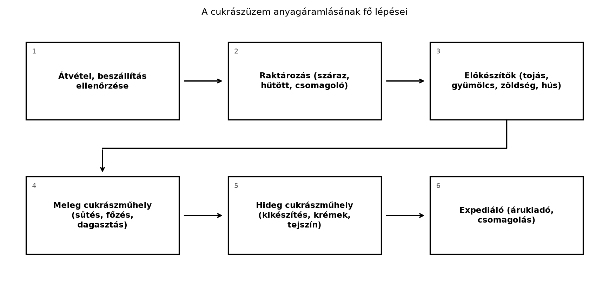
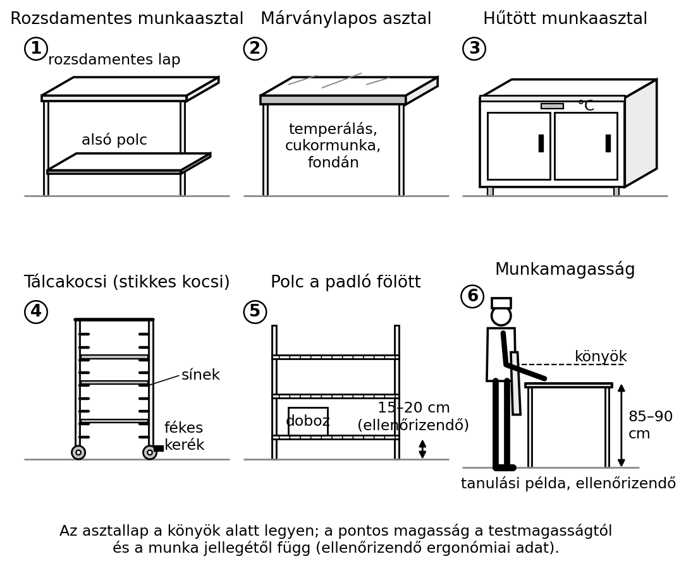

Hétköznap reggel fél hat. A cukrászdában még csendes. Az üzletvezető végigjárja a műhelyt: a liszt a raktárból az előkészítő asztalra került, a tojás a tojás-előkészítőben van, a meleg műhelyben már előmelegszik a sütő, a hideg műhelyben a tejszínhab a hűtőből érkezik. Ha a helyiségek sorrendje rossz, a szennyezett zöldséges láda a kikészítő és az expediáló között halad át, vagy a kész torta a nyersanyagbejáraton távozik. Az alábbi alfejezet azt tanítja meg, hogyan tervezzük meg a cukrászüzem helyiségeit úgy, hogy a termék útja biztonságos és gazdaságos legyen.
A cukrászüzem lelke a helyiségek kapcsolata. A következő folyamatábra a fő anyagutat mutatja:

A diagram hat fő állomást mutat. A valóságban a mosogatók, a szemétgyűjtő és a dolgozói öltöző nem ugyanazon az úton helyezkedik el, hanem az anyagúthoz képest oldalt vagy szemben, hogy ne keresztezzék a késztermék útját. A folyamatábrát gondolatban ellenőrzőlistaként használjuk: ha egy üzemben bármelyik nyíl visszafelé vagy keresztbe mutat, ott higiéniai kockázat vagy felesleges anyagmozgatás van.
Definíció. A cukrászüzem olyan élelmiszer-előállító létesítmény vagy annak önálló része, amelyben cukrászati termékeket iparszerűen vagy kisüzemi módon gyártanak, készítenek, csomagolnak, tárolnak, és onnan forgalmaznak. A cukrászüzem részei a gyártás jellegétől függően a raktárak, előkészítők, műhelyek, kikészítő, expediáló, mosogatók, szociális helyiségek és iroda.
Definíció. Az üzletkör a vendéglátóhely működési típusát, jellemző funkcióját és a hatósági engedélyezés szempontjából meghatározó besorolás. A cukrászati gyakorlatban megkülönböztetünk cukrászdát, cukrászüzemet, kávéházat, szállodai cukrászatot és ipari cukrászüzemet (ellenőrizendő: aktuális szakmai besorolás és engedélyezési fogalmak).
A cukrászda olyan vendéglátóhely, amely elsősorban cukrászati termékeket állít elő és árusít, gyakran saját fogyasztótérrel. A cukrászüzem vagy cukrászati manufaktúra ezzel szemben a termelésre koncentrál, és a készterméket szállítással, saját boltban vagy viszonteladón keresztül értékesíti. A kávéház italforgalmú vendéglátóhely, amely jellemzően kész süteményeket kínál, és csak kisebb befejező műveleteket végez. A szállodai cukrászat a szálloda konyhájának része, és a reggeliztetéstől a rendezvénytortáig széles skálán dolgozik. Az ipari cukrászüzem nagy tételben, gépesített gyártósorokon, csomagolt termékeket készít bolthálózat vagy export számára (ellenőrizendő: az egyes kategóriák pontos jogszabályi meghatározása).
Jogszabály. Az élelmiszer-higiéniáról szóló 852/2004/EK rendelet mellékletei tartalmazzák a helyiségek kialakításának általános elveit: a helyiségek legyenek tisztán tarthatók, jó karban tartottak, megfelelő szellőzésűek, természetes vagy mesterséges megvilágításúak, megfelelő kézmosási és toalett-lehetőséggel. A vendéglátó- és cukrászüzemekre a NÉBIH által közzétett jó higiéniai gyakorlat (GHP) útmutatók és a Magyar Élelmiszerkönyv irányelvei adnak további, a hazai gyakorlathoz igazított követelményeket. A konkrét helyiségméreteket, a minimális alapterületet, a kézmosók számát és a gépészeti előírásokat mindig a hatályos nemzeti előírás és a létesítési engedély szerint kell ellenőrizni (ellenőrizendő: a helyiségekre, a szellőzésre, a megvilágításra és a szociális helyiségekre vonatkozó jelenleg hatályos részletszabályok).
Higiénia. A cukrászüzem tervezésekor a legfontosabb alapelv az egyirányú anyagáramlás és a tiszta és szennyezett övezetek szétválasztása. A nyers, csomagolatlan alapanyag soha nem keresztezheti a kész, csomagolatlan termék útját. A tojás, a nyers zöldség, a hús és a hulladék a „szennyezett” oldalhoz tartoznak. A kikészítő, a késztermékhűtő és az expediáló a „tiszta” oldalhoz tartoznak. A két övezet között térbeli vagy időbeli szétválasztást kell kialakítani, például külön helyiség, fal, zsilip vagy műszakonkénti fertőtlenítés.
A raktárakat a nyersanyag jellege szerint csoportosítjuk: száraz raktár (liszt, cukor, csomagolt alapanyagok, fűszerek), hűtött nyersanyagraktár (tej, tojás, vaj, tejszín, gyümölcs; a héjas tojás külön, zárt dobozban), mélyhűtött tároló (gyorsfagyasztott gyümölcs, fagylaltkeverék, kész félkész termék), csomagolóanyag-raktár (dobozok, tálcák, fóliák) és vegyi-/takarítószer-raktár (külön, zárható). A nyersanyagraktárak a beszállítási oldalon, az átvételi zónához közel helyezkednek el; a késztermék- és félkésztermék-hűtő (kész krémek, töltött termékek) a tiszta oldalon, a hideg műhely és az expediáló mellett áll, hogy a nyers és a kész anyag útja ne keresztezze egymást. Padlójuk mosható, polcaik rozsdamentes vagy élelmiszer-minőségű műanyagból készülnek. A hűtött tárolók hőmérséklete rendszeresen ellenőrzött (ellenőrizendő: hűtési hőfokhatárok).
Az előkészítőkben tisztítjuk és adagoljuk a nyersanyagokat. Kiemelten fontos a tojás-előkészítő: a tojást itt felütik, szűrik, szükség szerint pasztőrözik vagy hőkezelik; itt kizárólag tojásos műveleteket végzünk, és a helyiség saját kézmosóval rendelkezik. Gyümölcs- és zöldségelőkészítőben mossuk, hámozzuk, szeleteljük a nyers gyümölcsöt és zöldséget; a szennyezett héj és a levelek nem juthatnak be a meleg műhelybe. Hús- vagy tejelőkészítő csak akkor szükséges, ha a cukrászati üzem sós pitéket, húsos leveles termékeket is készít; ez külön hűtéssel és kézmosóval rendelkező helyiség (ellenőrizendő: a tojás- és húselőkészítőkre vonatkozó részletszabályok). Minden előkészítő a szennyezett övezet része.
A cukrászműhely a termelés magja, amelyet meleg részlegre és hideg részlegre osztunk.
A meleg műhely a sütők, főzőüstök, dagasztók, habverő gépek, tésztanyújtók helye. Itt készülnek a tészták, a cukorfőzetek, a sütések és a főzött krémek. A meleg műhelynek erős pára- és hőelszívó szellőzésre van szüksége. A padló csúszásmentes, a falak moshatók, a munkaasztalok hőálló, sima felületűek. A meleg műhely a szennyezett és a tiszta övezet határán helyezkedik el: a nyers tészta bekerül, a megsült, hőkezelt termék kikerül a hideg oldalra.
A hideg műhely vagy kikészítő a hűtött, hőkezelés nélküli befejező műveletek helye: krémek betöltése, habosítás, tejszínfelverés, csokoládéval való bevonás, szeletelés, díszítés. Itt alacsonyabb hőmérsékletet tartunk (tanulási példa: 18–22 °C, ellenőrizendő), a levegő páratartalmát is szabályozni kell. A hideg műhely már a tiszta övezethez tartozik, ezért nem végezhető ott nyers tojás felütése, mosatlan zöldségkezelés vagy hulladékgyűjtés.
Ha a termékek bonbonok, pralinék vagy csokoládédíszek készítéséhez kapcsolódnak, indokolt csokoládéműhely vagy temperáló helyiség kialakítása. Ez a hideg műhely mellett, klimatizáltan, 18–20 °C-os (ellenőrizendő) hőmérsékleten működik, és különlegesen tiszta, pormentes környezetet igényel. Itt tárolják a temperált csokoládét, és itt öntik, mártják, fényezik a bonbonokat.
A cukrászüzemben két mosogatórendszert különböztetünk meg: a fekete mosogatót a szennyezett edények, előkészítő edények, tojásos tálak mosására; a fehér mosogatót a tiszta oldal edényeire, például kikészítő tálakra, nyomózsákokra, habzsákokra. A két mosogató térben elkülönül, saját lefolyóval, forró vízzel és fertőtlenítővel. A mosogatók az üzem hátoldalán, a szennyezett övezethez közel helyezkednek el, de a fehér mosogató természetesen a tiszta övezet felé nyit. A mosogatógépet úgy kell beépíteni, hogy a be- és kiürítés ne keresztezze a késztermék útját (ellenőrizendő: mosogatási hőmérséklet és fertőtlenítési követelmények).
Az expediáló a késztermék kiadására szolgáló, elkülönített helyiség vagy zóna. Itt csomagolják, címkézik és rakják szállítódobozba a termékeket. Innen viszik a cukrászda pultjába vagy a szállítójárműbe. Az expediáló hűtéssel rendelkezik, és tiszta övezet. Az asztalok rozsdamentesek, a csomagolóanyagok kéznél vannak. Az expediálóból nem nyílik közvetlen ajtó a raktárba vagy az előkészítőbe, mert az kereszteződést okozna.
A szociális helyiségek (öltöző, zuhanyzó, WC, étkező, pihenő) a termeléstől jól elkülönítve, a személyzeti bejárat felől helyezkednek el. A WC-ből közvetlenül a műhelybe lépni tilos; előtéren és kézmosón kell áthaladni. Az iroda az ügyvezetés, rendelésfelvétel, számlázás és dokumentáció helye; nem feltétlenül a termelési sorban, de lehetőleg az expediáló közelében, hogy az átadás-átvétel ellenőrizhető legyen. Az iroda nem élelmiszer-előállító helyiség, ezért az ottani higiéniai szabályok enyhébbek, de az anyag- és emberút-tervezésnél figyelembe kell venni.
A cukrászüzem berendezését a tisztíthatóság, a korrózióállóság és a hőállóság határozza meg. A legelterjedtebb felületek:
A munkaasztalok magassága a dolgozó testmagasságához igazodik (tanulási példa: 85–90 cm, ellenőrizendő ergonómiai adat). A meleg műhelyben az asztalok mellett hőálló alátéteket helyezünk el a forró tepsik számára. A polcok a raktárakban és a hűtőkben rozsdamentes vagy műanyag rácsok; a padlótól legalább 15–20 cm-re helyezkednek el, hogy alattuk takarítani lehessen és a dobozok ne érjenek a nedves padlóhoz (ellenőrizendő). A kocsik (nyitott vagy zárt szállítókocsik, nyersanyagkocsik, tálalókocsik) biztosítják az anyagáramlást a helyiségek között. A kocsikat is színkóddal vagy felirattal jelöljük, hogy a nyers és kész termék szállítására ne ugyanazt használjuk. A kocsik kerekeinek kopásállónak és moshatónak kell lenniük.

Az ábra számozott elemei: (1) rozsdamentes munkaasztal alsó polccal, (2) márványlapos asztal temperáláshoz és cukormunkához, (3) hűtött munkaasztal, (4) tálcakocsi (stikkes kocsi) sínekkel és fékes kerékkel, (5) a padlótól elemelt polc, (6) oldalnézet: az asztallap a könyök alatt van.
| Üzletkör | Jellemző | Tipikus helyiségigény |
|---|---|---|
| Cukrászda cukrászüzemmel | Saját műhely, helyben értékesítés, széles termékválaszték | Teljes üzem: raktár, előkészítők, meleg-hideg műhely, kikészítő, expediáló, mosogatók, szociális |
| Kávéház | Italforgalom, süteményfélék, gyakran beszállított termék | Kiszolgálótér, bárpult, tálalókonyha, kisebb előkészítő, kiadómosogató |
| Szállodai cukrászat | Hotelkonyha része, reggeli, desszertek, torták, catering | Önálló műhelyrész, de közös hűtők, raktárak, gyors hűtők, expedíciós lift |
| Ipari cukrászüzem | Nagy tétel, állandó minőség, szállítás bolthálózatba | Gyártócsarnok, temperáló, hűtőkamrák, késztermékraktár, laboratórium |
A táblázat azt mutatja, hogy minél összetettebb a termelés, annál több önálló zónára van szükség. Ugyanakkor a higiéniai elv minden üzletkörben ugyanaz: a nyers és kész anyag útja ne keresztezzen.
Az üzem tervezésekor két fő útvonalat kell elkülöníteni: az anyagáramlást (nyersanyag be, késztermék ki) és az emberáramlást (dolgozók belépése, öltözés, kézmosás, munkahelyre vonulás). Az anyagáramlás egyirányú: beszállítás → raktár/előkészítő → meleg műhely → hideg műhely/kikészítő → expediáló → fogyasztói tér. A hulladék útja ezzel ellentétes, és soha nem keresztezi a késztermék útját; a szemetet a szennyezett övezetből, külön kijáraton vagy időben elkülönítve viszik ki. Az emberáramlás is irányított: a dolgozó a szociális blokkból, tiszta munkaruhában lép a műhelybe; a nyers előkészítőből nem megy át közvetlenül a kikészítőbe kézmosás és esetleg munkaruha-váltás nélkül.
Szabály. A helyiségek kapcsolatát úgy kell kialakítani, hogy a termék minden lépésben a következő tisztább zónába kerüljön, és az egyes zónák között ne legyen visszaáramlás. A hűtött késztermékek útja a legrövidebb legyen a hideg műhelytől az expediálóig.
A mintaalaprajz egy kb. 40 m²-es (8 m × 5 m) üzemet mutat. A szennyezett övezet (sraffozva: átvétel, raktárak, tojás-előkészítő, fekete mosogató, hulladéktároló) a bal oldalon van; az anyagút (folytonos nyíl) innen a meleg műhelyen és a hideg műhelyen át az expediálóig és a pultig egy irányba halad. Az emberút (szaggatott) a személyzeti bejárattól az öltözőn és a kézmosón át vezet a műhelybe, a hulladékút (pontozott) külön kijáraton távozik, és egyik sem keresztezi a késztermék útját. A HTML-kiadásban az útvonalak és az övezetek rétegenként ki-be kapcsolhatók, a „hibás változat” pedig a lenti 1. tipikus hiba keresztező útját mutatja. A 6. feladat rajzát ehhez a mintához lehet hasonlítani.
Továbbvitt eredmény. Az itt megismert helyiséghierarchia és anyag-ember útvonal alapozza meg a kéziszerszámok, gépek elrendezését (Cukrászati kéziszerszámok, edények és formák) és a későbbi munkaszervezési tervezést (Munkaszervezés és a cukrászüzem munkafolyamatainak tervezése). Az üzembejáráskor ugyanezt az elvet használjuk: minden gépet ahhoz a zónához kell helyezni, ahol a nyersanyag éppen a termelési folyamatban áll.
A helyiségek minőségét elsősorban szemrevételezéssel és bejárással ellenőrzik. A jó üzemkapcsolat jellemzői: - az anyagáramlás egyirányú, nincs kereszteződés a szennyezett és a tiszta övezet között; - a hideg műhely és az expediáló hőmérséklete szabályozott és naplózott; - a kézmosók minden zóna közelében megtalálhatók, meleg vízzel, szappannal és egyszer használatos törlővel; - a fal, padló, mennyezet sima, mosható, repedésmentes; - a szellőzés hatékony, nincs páralecsapódás a késztermék közelében; - az asztalok, polcok épek, a hűtők ajtaja záródik, a hulladékgyűjtők fedettek.
Az ellenőrzéshez használjunk GHP-önellenőrzési jegyzéket (ellenőrizendő: NÉBIH aktuális útmutatója). A jegyzék tételesen felsorolja, mit kell naponta, hetente, havonta rögzíteni.
Hiba: A raktárból a kész torta szállítókocsija áthalad a tojás-előkészítőn. Ok: a helyiségek sorrendje nincs anyagáramlás szerint kialakítva; az épület adottságai miatt a régi falak megmaradtak. Megelőzés/javítás: az útvonalat áthelyezéssel vagy zsilippel leválasztani; a készterméket másik folyosón szállítani.
Hiba: A hideg műhelyben nincs külön kézmosó, a dolgozó kénytelen a meleg műhelybe járni. Ok: tervezéskor elfelejtették a zóna kézmosási pontját. Megelőzés/javítás: minden műhelyrész legalább egy kézmosót kapjon, lehetőleg az ajtó közelében; a meglévő hiányt pótolni kell, mert a szennyezett kéz keresztezheti a tiszta zónát.
Hiba: A fehér mosogató a szennyezett előkészítő mellett helyezkedik el, és a tiszta edények a nyers hússal érintkező felületen haladnak át. Ok: a mosogatók besorolása nem zóna szerint történik; a tiszta edény útja keresztezi a szennyezett oldalt. Megelőzés/javítás: a fehér mosogatót a hideg műhely vagy az expediáló közelébe kell tenni, a tiszta edényeket pedig külön, a szennyezett úttól elválasztott polcokon tárolni.
Hiba: Márvány asztalra savas citromlevet öntenek, és az asztal felülete matt foltossá válik. Ok: a márvány kalcium-karbonát tartalma savval reagál. Megelőzés/javítás: savas munkákhoz rozsdamentes vagy műanyag felületet használjunk; a márványlapot semleges tisztítószerrel mossuk, savas készítményt soha ne hagyjunk rajta.
Egy kisvárosi cukrászda bővíteni szeretne. A régi üzletben a sütő a kiszolgálótér mellett volt, a hűtő a pincében, a tojásos edényeket pedig a pult mögött mosták. Az üzemeltető szakmai tanácsadót kért, aki a fenti elvek szerint átrendezte a helyiségeket. A beszállítást a hátsó udvar felé irányították, ahová raktárat és tojás-előkészítőt építettek. A meleg műhely a raktár mellett kapott helyet, a hideg műhely a meleg műhely után, a kiszolgálótértől elválasztva. A fehér mosogatót a hideg műhelybe tették, a fekete mosogatót a tojás-előkészítő mellé. Az expediálót a hideg műhely és a pult közé helyezték. A hatósági ellenőrzésen már csak kisebb észrevételek voltak: például egy kézmosónál hiányzott a törlőpapír. Az üzemeltető a változtatás után azt tapasztalta, hogy a dolgozók kevesebbet mozognak, a termék kevesebbszer melegszik fel szállítás közben, és a vendégpanaszok száma is csökkent. Ez az eset mutatja, hogy a helyiségek kapcsolata nem papíralapú elmélet, hanem mindennapi biztonságot és gazdaságosságot ad.
1. feladat (A)
Nevezd meg a cukrászüzem öt alapvető helyiségcsoportját, és írd
mindegyik mellé, milyen fő tevékenység folyik ott.
2. feladat (A)
Definiáld röviden, mi a különbség a cukrászda és a cukrászüzem
között.
3. feladat (B)
Egy tanuló az alábbi sorrendet rajzolta: Raktár → Előkészítő → Meleg
műhely → Expediáló → Hideg műhely. Mi a hiba, és miért? Rajzold
helyesen.
4. feladat (B)
Egy kis cukrászüzemben a tojás-előkészítő a hideg műhely mellett
található, de nincs külön kézmosó. Milyen kockázatot jelent ez, és
hogyan lehet a legegyszerűbben javítani?
5. feladat (C)
Egy új üzem tervezésekor azt javasolják, hogy a fehér mosogató a fekete
mosogató mellett legyen, mert így egy közös víz- és lefolyócsatlakozást
lehet kiépíteni. Elemezd, miért higiéniailag kockázatos ez a megoldás,
és adj jobb elrendezést.
6. feladat (D)
Készíts A4-es lapra egy egyszerű alaprajzot egy 40 m²-es cukrászda
műhelyéről a mellékelt folyamatábra alapján. Jelöld a helyiségeket, a
kézmosókat, a hűtőket, a sütőt és az anyagáramlás nyilát. Értékeld, hogy
az anyagáramlás egyirányú-e.
A cukrászda vendéglátóhely, amely saját fogyasztótérrel rendelkezik, és helyben készült vagy beszállított termékeket árusít. A cukrászüzem termelő létesítmény, amely elsősorban gyártásra rendezkedik be, és a készterméket szállítással, saját bolthálózatban vagy viszonteladókon keresztül értékesíti.
A hiba az expediáló és a hideg műhely sorrendjének felcserélése. Az expediáló a késztermék kiadási pontja, ezért a legvégén áll. A hideg műhelyben a késztermék utolsó műveletei (krémbetöltés, díszítés) zajlanak, így az expediáló elé kell kerülnie. Helyes sorrend: Raktár → Előkészítő → Meleg műhely → Hideg műhely → Expediáló.
A tojás-előkészítő a szennyezett övezethez tartozik, és a nyers tojásból származó Salmonella kockázat miatt saját kézmosóra van szükség. Ha a kézmosó a hideg műhelyben van, a dolgozó szennyezett kézzel lép át a tiszta zónába, keresztszennyezést okozva. Javítás: a tojás-előkészítőben vagy annak közvetlen előterében meleg folyóvízű kézmosót kell kialakítani, folyékony szappannal és törlőpapírral.
A fekete és fehér mosogató közös helyen való elhelyezése veszélyes, mert a szennyezett edényekről fröccsenő víz és a tiszta edények érintkezése keresztszennyezést okozhat. A tiszta edényeket a szennyezett oldalról érkező légmozgás és személyzet is szennyezheti. Helyes elrendezés: a fekete mosogató a szennyezett övezet (előkészítők) mellett, a fehér mosogató a tiszta övezet (hideg műhely, expediáló) mellett, külön helyiségben vagy legalább válaszfallal elválasztva, saját tisztaedény-tárolóval.
A rajzon az alábbiakat kell ellenőrizni: - a bejárati oldalon raktár és tojás-előkészítő, saját kézmosóval; - a meleg műhely sütővel, dagasztóval, a hideg műhely hűtővel, munkaasztallal, kézmosóval; - az expediáló az utolsó helyiség, a fogyasztótér felé nyíló ajtóval; - a mosogatók különválasztva, a hulladékgyűjtő a szennyezett oldalon; - az anyagáramlás nyila egyirányú, nem keresztez semmilyen ellenkező irányú forgalmat. Ha a rajzon kereszteződés vagy hiányzó kézmosó látható, az hibás tervezés jele.
A cukrászüzem helyiségeit az egyirányú anyagáramlás és a tiszta–szennyezett övezetek szétválasztása szervezi. Az anyag útja: beszállítás/átvétel → raktár → előkészítők (tojás, gyümölcs, zöldség) → meleg cukrászműhely → hideg cukrászműhely/kikészítő → expediáló. A raktárakat nyersanyagfajta szerint különítjük el; a tojás-előkészítő saját kézmosóval rendelkezik. A meleg műhely a sütés-főzés helye, ahol a páraelszívás létfontosságú; a hideg műhely már a tiszta övezet. A fekete és fehér mosogatót térben el kell választani. Az üzletkör – cukrászda, cukrászüzem, kávéház, szállodai, ipari – meghatározza a szükséges helyiségcsoportokat. Bútorzatban a rozsdamentes acél és a márvány a jellemző; a fa nedves helyiségben tilos. Az ember- és anyagáramlást külön kell vezetni, a hulladék útját leválasztva. Továbbvitt eredmény: ezek az ismeretek szükségesek az eszközök és gépek elhelyezéséhez (Cukrászati kéziszerszámok, edények és formák) és a munkaszervezés tervezéséhez (Munkaszervezés és a cukrászüzem munkafolyamatainak tervezése).
Felhasznált forrástípusok: a 852/2004/EK rendelet mellékletei (élelmiszer-higiéniai követelmények); a NÉBIH jó higiéniai gyakorlat útmutatói; a Magyar Élelmiszerkönyv vendéglátásra és cukrászati üzemekre vonatkozó irányelvei; munka- és tűzvédelmi jogszabályok általános elvei. A szövegben jelzett ellenőrzési pontok: a helyiségek minimális alapterületére, a kézmosók számára, a hűtési hőmérsékletekre, a mosogatási előírásokra, a hideg műhely hő- és páratartalmi értékeire, valamint az üzletkörök pontos jogszabályi meghatározására vonatkozó hatályos részeket a kiadás előtt ellenőrizni kell. A hivatkozott konkrét rendeleti mellékletek, paragrafusok és határértékek nem ellenőrzöttek; azokat jelzett példaként adtuk meg.